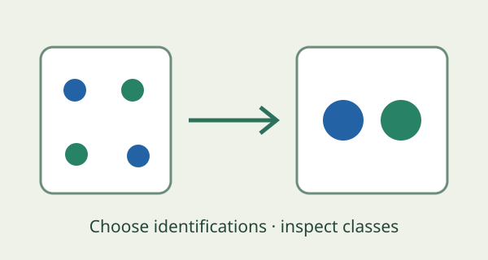
Grounded theory and a finite colimit
Choose incident identifications and test a coding through a finite quotient; a precise but limited grounded-theory analogy.
category theory, colimit, quotient, qualitative research
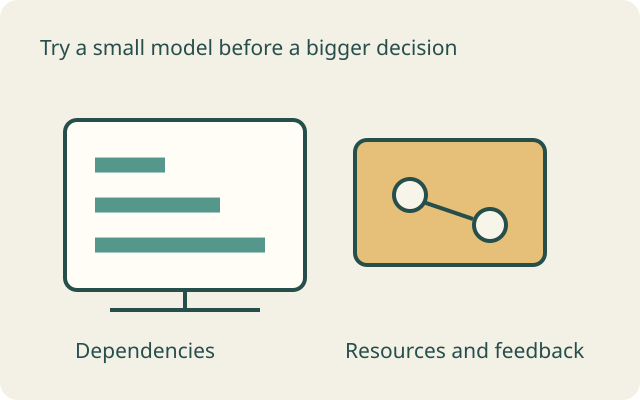
A motivating example
A delivery team has tasks and milestones; another view groups work into packages or records the states it produces. These small examples explore what survives when we translate or combine views. The collection also includes stand-alone mathematical teaching examples rather than one universal project model.
Which relationships must a change of view preserve?
Start with the atlas explanation and its project graph, or explore a specific construction. Each example states what is modelled and what remains an analogy.

Choose incident identifications and test a coding through a finite quotient; a precise but limited grounded-theory analogy.
category theory, colimit, quotient, qualitative research
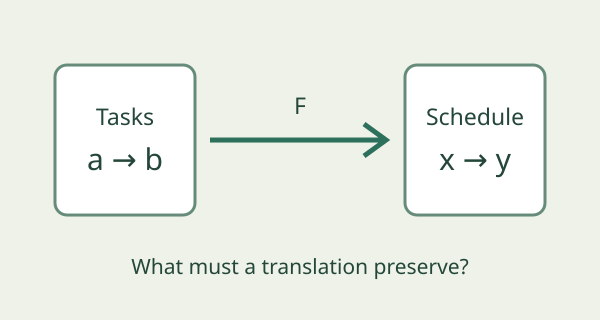
Learn what project-view mappings would need to preserve; distinguish proposed functors, relations and heuristic task drafting.
category theory, project management, functors
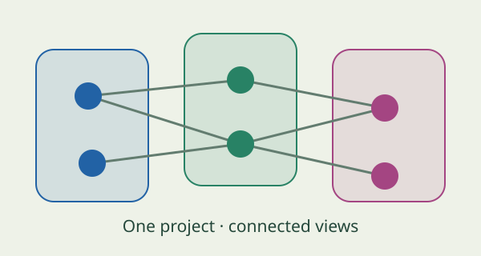
Explore project objects and relationships with category filters, three layouts and explanations of every connection.
functors, category theory, visualization, project management
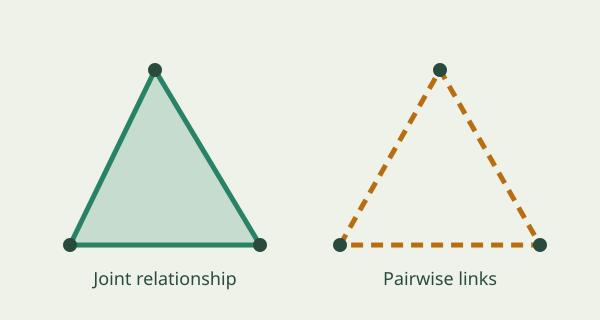
Compare pairwise links with an explicitly declared three-way relationship using filled and outlined triangles.
simplicial models, higher-order interactions, project management
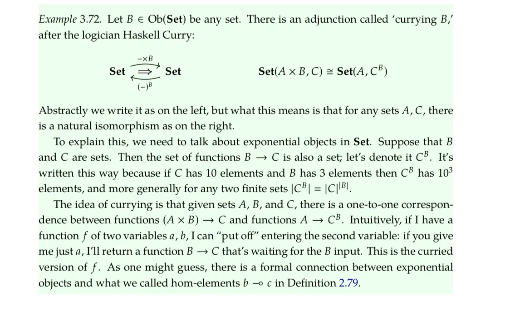
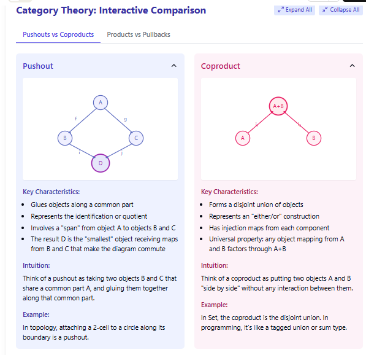
stop getting mixed up between push outs and pullbacks, products and Co products
education, pushout, product
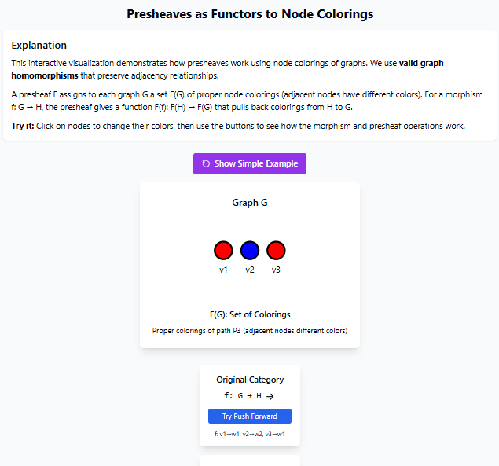
explains why pre sheaves are a functor from the Opposite category using a node colouring example
presheaves, functors
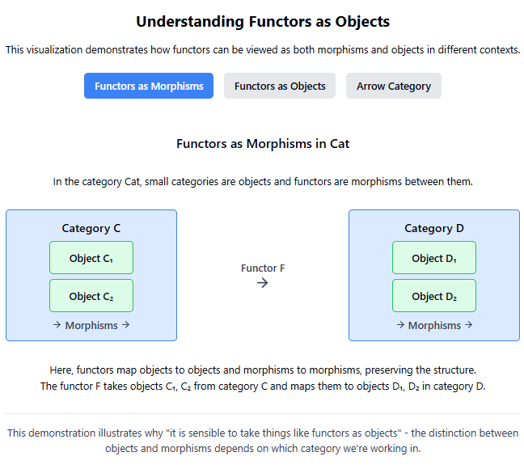
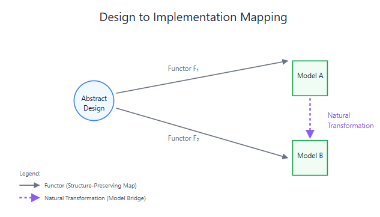
showing how Natural transformations allow you to move between models
operad, models, natural transformations, functors
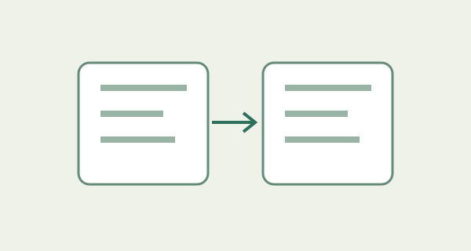
token-chasing diagram for GoI composition as cut and execution
geometry of interaction, category theory, visualization
fibration-based milestone linking toy example
category theory, fibration, project management, visualization
interactive sheaf-style scheduling playground for local-to-global WBS consistency
category theory, project management, sheaf, scheduling, visualization
group actions for project thinking with toggle dynamics on posets
group actions, project management, toggle groups, posets
galois adjoints for project management rail upgrade demo
category theory, adjoints, project management, visualization
category theory toolkit for construction systems engineering
category theory, construction, toolkit, systems
composable uncertainty wiring diagram for a co-design loop (power/cooling/footprint)
category theory, uncertainty, wiring diagrams, co-design
fibration-based milestone linking interactive example
fibration, milestones, linking
No examples match. Try a broader search or select all topics.